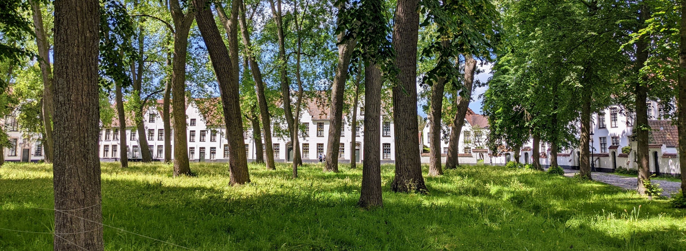
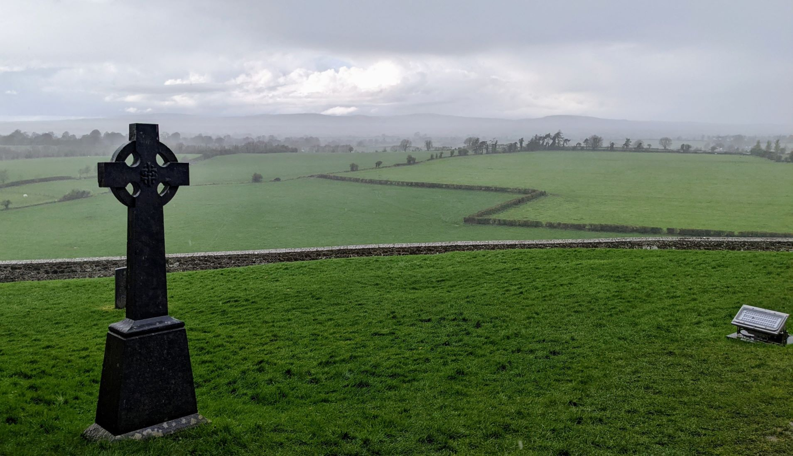
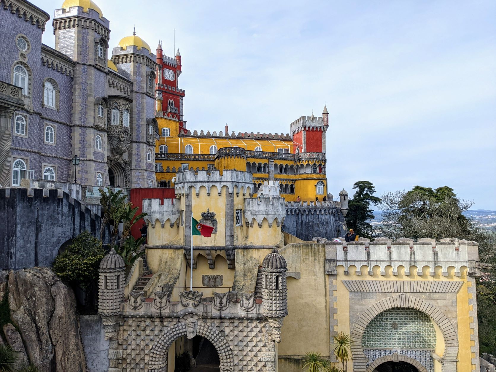

I went to Seville on a work trip. My first sights were clear blue skies and sunflower fields with occasional cacti and stone ruins. After checking in we had our first tapas, the most prevalent style of restaurant in the area. I had many tapas throughout the trip ranging from fancy to cheap cerveceria finger food, some authentic some not. I enjoyed salmorejo (a refreshing chilled tomato soup), chicharrones (fried pork), various seafood, cheeses, olives, and of course the local jamon iberico. Oh and caracoles, which are tiny snails in a garlic butter sauce - they are very tasty. All of this paired with local red or white wine, or the local beer on tap, Cruzcampo.
My first free day I joined a free walking tour starting from downtown Seville. My guide explained the Roman and Moorish history and influence, similar to what I had learned on my Portugal trip. The guide pointed out a series of buildings displaying three distinct architecture styles - Moorish, Renaissance from Italian influence, and the local style, all present in modern Seville.
There is also Greek influence in Seville as evidenced by the double columns common in city art and architecture, modeled after the Pillars of Hercules. The Pillars of Hercules refers to two mountains flanking the nearby Strait of Gibraltar, that was seen as the end of civilization. Another common sight in Seville is the NO8DO symbol which represents the city's loyalty to the King Alfonso X and is read "no me ha dejado" - meaning "has not abandoned me".
The Cathedral of Seville is the largest cathedral in the world by volume. The cathedral's origins go back to the Moors when it served as a mosque. Original Moorish influences still exist within it today, as well as Gothic and Renaissance styles. On my walking tour, the guide even pointed out a block in its foundation that was reused from a Roman ruin.
La Giralda, the massive belltower, served triple duty with bells for Christians, a horn for the Jewish, and as a Muslim call to prayer, with the singer making the ascent multiple times a day by donkey on the ramp inside the tower.
The cathedral is also famous for housing the tomb of Christopher Columbus, who left on his journey to the Americas from Seville.
The Alcazar is a Moorish palace. More recently it is famous for scenes from Game of Thrones. The structure is incredibly massive and detailed with intricate designs. The gardens are also extensive and impressive, with ducks and peacocks wandering the grounds.
We went through Juderia, the old Jewish neighborhood that resided by the Alcazar for protection. After the bubonic plague, the Jews survived better than everyone else because of their religious hygiene practices. Christians, not understanding that, attacked Juderia, killing a thousand people except for three families that gained protection from the Alcazar.
We saw a site memorialized for the local Romeo-and-Juliet-style tragedy, where the woman lovers' head had been severed and posted in a window.
We walked the old Roman aqueduct, passing a site where Washington Irvine lived and sites related to the operas Carmen and Don Giovanni.
We passed the old tobacco factory, a structure created to impress the public with the strength of the new royalty. The employees were all women because they could roll small cigarettes. A small prison nearby was used for workers that were caught trying to snuggle out product.
I visited the Plaza de Espana, a heavily columned, semicircular building in the middle of a large park. Again, this was massive and ornate. This building can be scene in scenes from Star Wars Episode 2.
I also had a day trip to Cadiz, where I got to swim in the Atlantic in a bay flanked by two fortresses. We walked the fortress and also saw the Cadiz Cathedral in passing. Unfortunately we also wanted to see the Formula 1 race with people at a bar in Seville so we had a short visit here.
On my own I visited the 1870 Seville Bullring, where they still have live bullfights. I wanted to go to a fight, but then was warned that its a bit disturbing to see and after a youtube video I decided its not something I would enjoy or feel good about supporting.
I crossed the original bridge that connected Seville to Triana across the river and visited the indoor Triana Market for some fresh fruit, pastries and a cold salmorejo soup at a bar.
I went with a group to see a Flamenco performance in a local bar down an alleyway and enclosed in a courtyard. The performance was a guitarist, a singer and a dancer and it was one of my favorite experiences of the trip. Unfortunately, they didn't allow photos or video but I can appreciate that it made the experience better for everyone.
All in all, Seville is a great city to visit and monuments like the cathedral, the Alcazar and the Plaza de Espana are all destination-worthy in their own right. The food and drinks are amazing, I got to practice my terrible Spanish, and most every day was sunny, dry and hot. I am beyond lucky that I got to visit a place like this for work!
Ben and I took a weekend trip to Bruges! I’d been wanting to go and I sneakily managed to make Ben watch In Bruges with me in prep for the trip (I put it on while he was working and he got sucked in). The movie is older but even my German coworker referenced it when I mentioned we were looking at going there. Anyway, we took the train and checked in to this super awesome stay I found on booking.com. It was an older house with an enclosed backyard and rooms for rent right on a cute square next to the Half Moon brewery. The owner is a music instructor and we were woken in the morning to him playing piano. I would definitely try to stay there again.
We tried some of his recommendations, starting with a small French restaurant down a tiny alley, where we had the most amazing goat cheese salad and Ben had some sort of indulgent duck fat dish.
The next day we did a free historical walking tour with Legends. We went by St John’s Hospital, one of the oldest hospitals in Europe dating back to the 12th century. Then we went by the "Lake of Love", a widened part of the canal with Flemish architecture, swans and ducks.

We passed the park-like grounds of the beguinage (Begijnhof), a 1245 convent that still houses nuns and unwed women today.
Rosary Quay (Rozenhoedkaai)
Bonifaciusbrug (a very photogenic bridge), where the nearby buildings overhang the canal which historically provided for easy waste disposal.
We passed the Basilica of the Holy Blood, a small building which is famous for housing a vial of Christ’s blood.
History Lesson: We learned of Bruges history as part of Burgundy. "Fifteenth-century Burgundy was a European great power with territories extending over French-, Flemish-, and German-speaking areas in the Low Countries and along the present-day border between France and Germany. With the important trading centres of Ghent, Bruges, and Antwerp, Burgundy was one of the richest countries in Europe." Mary of Burgundy (and richest heiress in Europe at the time), was wed to Maximilian I, son of Emperor Frederick III of the Habsburgs, in 1477. The local nobility rejected Maximilian's legitimacy as ruler, and even moreso after Mary's early death in a riding accident, favoring the French claim to rule. This led to 15 years of war as Maximilian struggled to control his new territory. In 1488 Maximilian was held prisoner by the citizens of Bruges, his own subjects, for several months. He was rescued and the fighting eventually ended, but Bruges earned itself the nickname “fools” for capturing their own ruler. The people of Bruges embrace this nickname today as evidenced by the popular beer “Brugse Brot” – Belgian Fool. We got to try this beer later at the Half Moon (Halve Maan) brewery, a local brewery dating back to 1856 which has a 3km underground beer pipeline from the brewery to its bottling plant. Also I bought a pair of crowned frog statues at a market that I named Max and Mary.
After the walking tour, we took a break at the Buorgogne des Flanders Brewery, for pretzel, cheese cubes, spicy mustard (delicious) and a beer tasting outside along the canal. I really liked the 50/50 kriek and brown mix. We wandered to yet another beer spot on the canal, trying more kriek beer and a Corne which comes in a glass horn!
We stopped in to the Historium Bruges, a tourist attraction that lets you “relive the Golden Age of Bruges”. It had a bit cheesy VR video and then walk-through exhibits. At the end we enjoyed at Duvel beer at the top overlooking the Markt Square. We had another absurdly tasty dinner, enjoyed the sights lit up at twilight and wrapped up the night.
The next day, we made our way to Markt Square, where the 13th century belfry (Belfort) stands. Of course, after seeing “In Bruges” we were sure to pay the entrance fee and climb the 366 steps to the tippy top where we were rewarded with views of the city. The top holds a giant music drum (carillon) that plays the bells, similar to what is in a music box. During our visit the bells were being played by the city carillioneur, who uses a keyboard to play the 47 bells.
While my brother was visiting, we took a mid-trip break at my apartment in Sittard. We started the spooky sci-fi show Dark which coincidentally is based near the Black Forest, our next destination. We made for Baden-Baden in the morning, a spa town since Roman times. Once we were checked in to our hotel, we went straight to the Caracalla Spa for a three-hour soak and stay in their various pools, hot tubs, and steam rooms.
We emerged fully relaxed and found a bit to eat in downtown at Löwenbräu Baden-Baden, a traditional Bavarian beer garden. Based on recommendations from my German coworker, we got schweinshaxe (massive crispy pork hock on the bone) and tafelspitz (tender boiled veal in sauce). Both were super good! And some beer and local wine of course.
In the morning, we progressed deeper in the Black Forest, following the road through valleys flanked by mountains and interspersed with small traditional homesteads. The scenery was fantastic but hard to capture in photos. We went to the Black Forest Open Air Museum, and got there just in time for a demonstration of the working mill. All the buildings in the museum were centuries old and relocated from around the region to showcase what life was like in that time.
We saw almost every kind of mill (grain (grist according to Ben), hemp, oil, two variations of saw mills) as well as a water-wheel driven blacksmith hammer and grinding wheel. There were also old homes that were displays in-and-of themselves but also housed exhibits on mining, logging, woodworking, glassblowing and other historical activities of the region. We spent way longer here than I anticipated and we still didn’t see it all. Ben learned the German word for Rye and immediately applied it to the purchase of a loaf of bread, while I got a jar of local forest bee honey that I hoped would be good for allergies.
We left the museum to catch the Adolf Herr House of Black Forest Clocks before they closed. The collection of clocks for sale was impressive but I ultimately decided if I buy one I’ll pick it out with Bill (and likely get one of the ones from base that are the same make but slightly cheaper).
We went to Triberg to hike the waterfall. This was one of the most accessible and impressive waterfalls I’ve seen. We enjoyed the small hike, took lots of photos and practiced our tree identification skills. That night in Baden-Baden we ate downtown again for more local German food, then checked out the casino briefly.
The next day we drove back north, then hiked to Burg Eltz. This is one of my favorite castles we've been to, its been untouched by war partly due to the family's political influence. The tour was a bit delayed and we were tight on time, so immediately after the tour we went to check in to our stay that night, a campsite.
Tight on time still, we booked it to Burg Cochem to catch the tour and dinner we had booked. The tour was in German but we were given a written tour in English. The castle was rebuilt in the 1800s following the original plans so everything was in very good shape and impressive.
After the tour, we had a dinner in the cellar of the castle that was a four-hour experience. Again, this was in German but we had a script in English. Despite missing a lot of jokes and being somewhat frightened when the German host went on an angry tirade and threw someone in a stockade, it was really fun. The food wasn’t bad either and Ben might be hooked on snuff now.
My campsite reservation was a two-person suspended hammock tent, which was a bit of a surprise since I wasn't sure from the website what it was I'd booked. It ended up being a fun stay that I would do again in the future. In addition to the suspended tent, the owners had setup canvas tents, composting toilets, a central firepit and had various barnyard animals (pigs, goats, sheep, chickens, ducks). They host community events at the space too. Ben made use of the cold outdoor shower setup but I opted to stay dirty but warm.
The road trip came to an end and the next day we made it back to the apartment in Sittard, where we caught up on more Dark. In the next week or so we also went to Valkenburg to tour the marlstone caves and the castle ruins. We went to the Thermae 2000 spa on a "swimuit weekend" where the sauna section was swimsuit mandatory instead of the normal nude-mandatory. Ben also became a semi-regular at the half-timbered 1540 bar in downtown Sittard.
My brother came to visit! I took the train up to Amsterdam a day before his arrival. I went by the Brouwerij ‘t IJ windmill to see about getting a beer and lunch but found that it was closed until later in the day. I went through the open part of the Artis Zoo and saw some flamingos and other birds and the entrance to Micropia, which I want to visit some other time with Bill. I stopped into a hipster brunch place for a really good shakshuka and tried “orange” wine, which is a natural wine made with white grapes that are fermented with the skins. I visited a holocaust memorial at a nearby park that is shattered glass so that the reflected sky is fractured. This eastern side of Amsterdam had a large Jewish population whose inhabitants escaped or were sent to concentration camps in WWII. In following years, the desolate area fell into disrepair and some portions destroyed and rebuilt.
I stopped into the Hortus Botanicus, the city botanical gardens. They had an impressive collection of cycads in the Palm House, some of them over 300 years old or the last of their species. The “three-climate” greenhouse was also fun to explore. I walked trails through a jungle and then an arid desert with plants separated by continent demonstrating convergent evolution.
I strolled through the Albert Cuypmarket to see the city’s largest street market, but it really wasn’t too special. My impressions may have been colored by the heavy rainfall that interrupted my wandering. I began to seek shelter in small stores but as the rain didn’t let up, I eventually completed my walk to the Owl Hotel. Once at the hotel, I spent a few hours getting warm and dry, then set out for food. I found a ramen place that happened to be of the same chain I’d eaten at in Brussels, Takumi. This one was just as good! Down the street I stopped into a jazz bar with live music and made a friend from San Diego that was passionate about beer and orchestras and had a frenzied eurotrip itinerary reflecting those interests, then turned in for the night.
The next day I retrieved Ben from the Amsterdam Schiphol Airport. After a break at the hotel, we rushed out for a canal boat tour but immediately cancelled and came back when we realized it was pouring rain again. When the rain let up, we instead opted to follow the walking tour recommended in Lonely Planet. We stopped into a cheese shop in the Nine Streets, wandered through the Begijnhof (a sort of nunnery) and then reached the Dam Square and toured the Royal Palace. The Palace had an audio tour describing its history as a town hall and then its transformation in 1806 by Napolean Bonaparte’s brother into a palace. There was an impressive display of architecture, statuary and paintings, all with significant meaning.
We stopped into a café on the square to rest and get some coffee then headed down an alley to the Rob Wigboldus Vishandel for a traditional pickled herring with onions and pickle in a simple bun. The salesman promised we would know Dutch from eating it and Ben did learn to say Dank je wel!
Our energy was fading but we rallied for a visit to a local genever distiller and tasting room dating from 1679, Wynand Fockinck. This was a really fun stop as the staff was enthusiastic to give us multiple samples and explain the origins and varieties (takeaway: its not gin but does require some juniper). Somehow, we learned something about life in the ballet in the process. We chatted with an Aussie at the end of his Amsterdam trip and a San Diego couple at the start of theirs. Ben now thoroughly jet-lagged, boozed and walked, we went back to the hotel and passed out until the next day.
The next day the first priority was breakfast, followed shortly after by a canal boat cruise. I agonized over options but eventually picked one with Flagship Amsterdam, which I was very pleased with as it was an open boat, small group and the guides were good. We started at the Anne Frank house, went down the Prinsengracht with its houseboats, turned near Monet’s old apartment and then went down the classier but less interesting Herengracht.
After the tour we walked back through the flower market and past the Rijksmuseum and into the Vogelpark. We stopped in here for a lunch at a Proeflokaal 't Blauwe Theehuis, which so happened to be a location for Brouwerij ‘t IJ so I got to have my brewery experience after all! We got a very nice cherry sour, modeled after the Belgian style. Finally we packed up and left Amsterdam via train at the central station.
We had a brief break from our Portugal trip and then set out for Dublin from our favorite nearby budget airline hub, Eindhoven. After landing we caught a cab to our stay, the Kinlay Hostel. We had a six bed mixed room and my expectations were very low since this was one of the few options available on this busy weekend (don’t travel around Easter in Europe!). However, the rooms were clean, we were lucky to have respectful Italian roommates that we hardly saw, and it was a quiet area at night.
We grabbed quick food from a small grill across the street that was pretty satisfying. That night we met up for a pub crawl that had 120 people attend! We started in Temple Bar, at The Norseman where there was a massive bar singalong to 90s and 2000s hits. Then we went to a clubby sort of bar with live music called Badbobs, then The Old Guinness Storehouse for traditional music and tried red lemonade, and finally Whelan’s, a sprawling pub with a dance room in the back. Eventually Bill and I split off and made our way back to the hostel, stopping at a convenience store to eat where we had a front row seat to watching a guy outside get physical with the police and getting promptly arrested and put into a van.
The next day we met our walking tour at The Spire. Our tour guide told us some nicknames for this spike-shaped monument: Stiletto in the Ghetto, Stiffy in the Liffy, and Erection in the Intersection. The Irish have a good sense of humor even in the government: there is a plaque on the O'Connell bridge memorializing a person that never lived, and was put in place by two brothers as a prank. After discovering this, the city decided to leave it, which illustrates the Irish phrase “Don’t let the truth get in the way of a good story”. We learned of Daniel O’Connell, a prominent figure in Irish history and an inspiration for peaceful protests by other activists. We saw the statue of O’Connell which still bears bullet holes from the Easter Rising of 1916. The Easter Rising was a bloody Irish insurrection against British rule that failed but contributed to support for Irish independence (which was eventually achieved in 1922).
A prominent impact on Irish culture is their heritage. The Celts lived here from 500 BC all the way to 800 AD - the Romans never came to Ireland. The Vikings controlled Ireland from 800 AD until about 1100 AD but they preserved much of the Celtic culture. Then Ireland was under the Anglo Normans until Irish Independence in 1922. I thought this was interesting because it explains the strong connection Ireland has to the Celts since the influence was maintained for so long.
We saw the 200-year-old ha-penny pedestrian bridge that used to charge a half penny toll to cross the River Liffy. We went by Trinity College, which was incorporated in 1592 by permission of Queen Elizabeth. Interestingly, Catholics were not allowed admission until 1793, though they continued to face attendance restrictions all the way until 1970. The college library houses the Book of Kells, an illuminated Gospel with intricate celtic artwork.
We stopped at the 1030 AD Christ Church Cathedral which has Viking origins, and has a “Tom and Jerry” display of a mummified cat and mouse that were found dead in a pipe organ. While the Christ Church Cathedral received funding by Guinness, the St Patrick Cathedral nearby was funded by Jameson. The St Patrick Cathedral commemorates St Patrick who in 400 AD brought Catholicism to Ireland. Finally, we went to the Dublin Castle grounds, where we learned the origin of the name Dublin is from the Celtic “Dubh Linn” meaning “Black Pool”. It was named by the Vikings who brought their ships up the mouth of the River Liffy and Rive Poddle to stop at a pool that is now the gardens of the Dublin Castle. The defensive castle was formed in 1204 at the order of King John of England. Most of the original medieval fortification was destroyed by fire in 1684, and was later rebuilt as a Georgian palace.
After lunch, we went to the Chester Beatty Library. This is a free museum housing the collections of a mining magnate, focused on Western, Islamic, East and South East Asian religious artefacts and books. It was definitely unique and impressive. We rounded out our Dublin stay with a drink at the Irish Whiskey Museum and Irish traditional food for dinner. Later that night Bill and I went to an arcade bar which was fun!
The next day we picked up our rental car from the airport. Enterprise upgraded us to a boat-like Opel, which Bill immediately hated. He hated it so much that he popped a tire pulling out of the garage and we eventually brought it back to Enterprise for a much more manageable Renault Clio. Our first stop was to go back into Dublin for Guinness Brewery Tour. The tour was really cool and we enjoyed a pint of the good stuff at the top with views of the city.
We made for the west side of Ireland, stopping in to see the Rock of Cashel. The Rock of Cashel was the traditional seat of the kings of Munster prior to the Norman invasion and features a round tower from 1100, an 1134 chapel, a 1270 cathedral with a residence and a graveyard. Unfortunately, for us it was raining, and the ruins are roofless so we had a quick tour.

We checked in to our stay in Killarney and then got pizza at the Killarney Brewing Company. I wasn’t able to confirm it but I’m pretty sure we met the owner of this business during our last stay in 2014. It had really expanded and offered some pretty good beer.
In the morning we had a full Irish breakfast at our stay and did a quick walk through downtown Killarney. We checked out and drove to see Ross castle, a reconstructed 1500s tower house located in the Killarney National Park on a scenic lake.
We made our way north up the coastline, taking in mountain views and driving narrow winding roads. We stopped briefly at Inch Beach, a long sandy beach on the western coastline.
In Dingle, we walked around and got some amazing massive-sized fish and chips from a food truck. Bill and I also made sure to stop in to the store for scones, which had basically sustained us the last time we were in Dingle.
Then we made for Doolin and checked in to our stay there. We went down the street to the Doolin McDermott pub where we had great food, black currant Guinness, and live session music with uilleann pipes.
The next day we enjoyed a hot breakfast at our B&B with fresh scones. Despite the rain, we met with Pat Sweeney for our Cliffs of Moher walk. The walk was as amazing as we had remembered, with great details from Pat.
We saw ravens as well as nesting seagulls and puffins! Fortunately the rain moved away from our direction and we had great visibility and views.
Afterwards we stopped in to O’Connors to warm up and get a hot lunch. Then we made the long drive back to return our rental car in Dublin. We stayed at O’Neills Victorian Townhouse which was a bit off the beaten path but Bill and I were tired so we had an early night and flew out the next day.
We had a great time in Ireland and had fun revisiting places we had seen and experiences we had had back in 2014 and seeing how things had changed and developed. If we go back, I would probably skip Dublin and try to get a flight into Shannon or Cork to explore the countryside more. We would definitely make a point of seeing Crean’s, and I’d like to explore Killarney National Park more and spend more time in Doolin.
Our time in Porto came to an end, and we embarked on the next leg of our journey – getting rental cars and touring the country. Our cab took us to the Porto airport for rental car pickup, and after figuring out satnav systems, we were on our way to the town of Coimbra. After parking, sitting at a café by the river and walking into town, we found the main sights of the town were up a steep hill. Following signs and Google Maps, we came to the Old Cathedral.
From the Cathedral, we made for the university. The University of Coimbra is one of the oldest universities in continuous operation in the world, having been established in Lisbon in 1290 and relocated to Coimbra in 1537. Unfortunately for us, we were running late and were tired, so we took in a glancing impression of the old university buildings from the outside and moved along. We did catch some university students playing music on the market streets on our way out.
We stopped in to the town of Alcobaça to see the monastery, the first gothic building in Portugal. The monastery was built in 1153 after Afonso Henriques, the first King of Portugal, conquered Santarém from the Moors. We made it just in time to tour the monks’ quarters, kitchen, cloister and the chapel. The chapel features the highly decorated Gothic tomb of King Pedro I and that of his mistress Inês de Castro, who was assassinated. The tombs face each other so that the lovers will be reunited in the afterlife.
We got to our stay in Nazaré, a condo perched on the cliff overlooking the city and beach. We explored down the street and stopped at the local bar which was just closing up but let us stay for a drink. That stop became a friendly exchange with the owner of the bar, and ended with us taking away 3 bottles of Portuguese wine. We went back to the condo to enjoy the wine and eventually succeeded in making a fire in the wood-burning stove using toilet paper for kindling.
The next day we had a slow morning and eventually made our way along the cliff toward town. We took the funicular down to Nazaré, walked the beach a bit and stopped in for lunch at Versus Restaurante. The restaurant we ate at was a husband-and-wife team, with the wife the chef and the husband the front of house. It was the best food we had the whole trip, with amazing seabass, salmon, squid rice and even a fish egg sac tapenade. Even the simple vegetable soup was really good.
We went back to the condo and got some provisions from the store (including proper fire starter). We walked out to the lighthouse at the point of the cliff, where there are displays regarding the record-setting waves of Nazaré and the surfers who brave them. That night we had a proper fire in the condo.
Again it was time to move on, and in the morning we made the drive to Lagos in the Algarve. On the way though, we had to stop into Óbidos, a traditional medieval fortified city constructed by the Moors and with relics from the Romans, such as an aqueduct.
The castle was conquered from the Moors in 1148 by first King of Portugal, Afonso Henriques. The story is that while the defending Moors focused on the front gates of the city, a small contingent dressed as cherry trees approached the back of the castle and took the Moors by surprise. Óbidos is also known for being patronized by the Queens of Portugal, a tradition that started in 1210 by King Afonso II when he gifted it to his queen Urraca. Finally, the town is famous for its gijinha liqueur, which we had had an opportunity to try earlier in Lisbon.
We made a quick tour of the cute city streets with whitewashed walls and yellow and blue trim, and walked the fortress walls with views of the area.
Back on the road, we stopped into a small town for something to eat. We tried ribs from Black Iberian Pig, a breed common in Spain and to some extent in Portugal, the same breed that ham ibérico comes from. It was quite good. Finally we got to our hotel in Lagos. After a long check-in process we all met up at the pool and then made for dinner at an Italian place in downtown.
The next day, after a busy hotel breakfast, we went to the Lighthouse of Cabo de São Vicente. The rocky cliffs here mark the far southwestern edge of Portugal and had great views of the Atlantic Ocean. We stopped by the Fort of Santo António de Belixe, a 16th century or older fort with little known about it. We took the path down the cliff to the water and got views of the cliffs from the base. For time, we passed on going to Fort Sagres.
We went back to Lagos for an all-you-can-eat sushi place for lunch, then got to the beach for some sun and piña coladas.
We took a boat trip from the marina that followed the coastline, viewing beaches tucked away in rocky alcoves, and probing into arched and cavernous rock formations. My favorite part was the tour guide pointing out what all of the rock formations looked like. Tour complete, we all met for dinner at A Barrigada, which was a highly recommended seafood place. I had an all-you-can-eat grilled variety fish option, which was excellent for the price but not as delicious as the place in Nazaré!
In the morning we had our hotel breakfast and made for Évora. This was our most inland destination and a detour on the way back to Lisbon. Our visit in Évora was quick. We had lunch at Café Alentejo, which had been recommended to us by a waiter in Lagos and it was super good. We made a circuit walking tour of the main sights including the Roman aqueduct and Roman temple and buildings associated with the Portuguese Inquisition. We stopped into some shops with cork made into all kinds of things, including dresses, shoes, hats and purses.
Leaving Évora, we opted to stop in to see the Almendres Cromlech. This is “the largest existing group of structured menhirs in the Iberian Peninsula (and one of the largest in Europe)”. It is a group of 95 large stones arranged in circles on a gently sloped hill. They date back to 6000 BC! It is believed to be a sort of gathering place, possibly religious. Amazingly, there are many more of these stone sites in the Évora region.
On the way to Lisbon, we saw many massive stork nests, often comically perched on top of impossibly narrow posts. And at one point along the highway, there was a huge group of maybe 12 of these nests all on a single utility structure.
We journeyed on to our hotel by the Lisbon Airport, returned the rental car, had a hotel dinner and turned in for the night. It was tough to part ways with my Mom and Geof, we had a great trip but as always, it felt too brief. And it was difficult to leave Portugal, a country I really loved to visit! When we go again, we will be sure to get a trip in to the Douro Valley. There are many more small towns to visit and it would be nice to hit the beach in the heat of summer. I’m also interested in the Camino de Santiago and there is a Portuguese route. And I can never get enough of Portuguese wine and seafood. As for a family trip, we are planning to go to Greece next!
Our brief time in Lisbon over, we caught our train to Campanha station in Porto. I thought my mom might miss the train as she ducked out to grab a coffee from a vendor in the station. Then later we found out there was a snack car directly behind us. And, like a bunch of tourists, we sat in the wrong seats but were politely corrected by the train staff as we were underway. The ride was peaceful and we got great views of the countryside while we plotted what to do in the next city. From Campanha, we missed a train to São Bento station while looking for a tourist information desk, which was closed. Fortunately, there was another train not too much later. Arriving into São Bento we saw the magnificent azulejo murals covering the inside of the station (there are 22,000 tiles done by one person over 11 years!), and got our first impressions of Porto as we walked to our stay down the street. Porto seemed to be more eccentric, and narrow and steep and windy than Lisbon, I loved it immediately!
Our rooms came with complimentary port wine and after settling in a bit, we compared views with our drinks in hand. We visited Hiroki’s room up the hill and caught our first amazing vista of the river and city. We made a plan there from what we could see already, cross the bridge to Vila Nova de Gaia, ride the funicular and go to the Porto Cruz rooftop. We did exactly that. The Luís I bridge we crossed was designed by the protégé of Gustave Eiffel, while a bridge further down the river was designed by Eiffel himself.
After a drink on the rooftop with sunset views, we grabbed food at one of the waterfront restaurants. This part of the trip we were often chilly and trying to find warmth, so we turned in after a hilly walk back.
We had initially planned to go on a Douro Valley and winery tour the next day, but we wanted a break from travel and there was so much more to see in Porto, so we decided to leave it for a future trip. The next day, Bill, Hiroki and I joined a walking tour starting on top of the hill near Porto University. Our tour guide was a history teacher that moved from Brazil seven years ago to move across Europe but instead has lived in Porto continuously. Being near the university, we saw students in their traditional robes, which was perhaps an inspiration for J. K. Rowling’s Harry Potter outfits. We saw the Carmo Church, two separate churches built almost 100 years apart that show the evolution of baroque styling as well as a large mural on the side. The churches are connected by a teeny house since it was illegal at the time to build two churches side-by-side.
We passed through the tree-lined Jardim da Cordoaria and its 13 laughing men statues, and saw the Lady Justice and Courthouse built under 20th century Portuguese dictator António Salazar. We stopped at the viewpoint we had seen the previous day (Miradoura da Vitória), and learned that this was at one point a defensive location in the 1830s civil war with Lisbon equipped with cannons. Our tour guide showed us a fired cannonball in the wall behind us that had been left as a reminder, and pointed out all the patches that had covered all the other strikes into that wall. We learned that the Church of Porto has an empty belltower from when half the church bells were donated toward the country’s defense against Napolean’s invasion.
We saw Livraria Lello, a historic bookstore with an art nouveau exterior and a cool staircase, that is now mobbed by tourists and Harry Potter fans. We saw the statue of Dom Pedro IV on Allies Avenue and learned of his role in leading Brazil to independence and the civil war in Portugal. We ended our tour in Gaia, and once more made for the banks this time to for a port wine tasting at Royal Oporto. Wine has been produced in the Douro Valley since Roman times. Barrels are brought downriver to the storage cellars of Porto, and in the 19th century, Gaia, when it was discovered to be cooler and produced better wine. Port was popularized in England when Napolean’s sea blockade forced them to look for wine from new sources. The winery we visited, Royal Oporto, had an important role as they were funded by the government to create a standard for port wine. We learned that only certain designated grapes can be called port wine, we tried a port made from Douro-grown Moscato which had to be termed port liqueur.
After drinks, we went to a restaurant for Porto’s own sandwich, a Francesinha (“Little Frenchie”). It was kind of like grilled cheese bathed in soup. We opted to do a one hour boat tour on the river, which was nice to get yet even more views of the city. We went back to our stays, and after a break grabbed late dinner at an Italian place down the street.
What a trip! Bill and I flew out with his brother from the Netherlands, while my mom and her husband came from Florida (by way of Ireland) to meet us in Lisbon. We checked into our stay on Rossio Square and initially killed some time at the Museo de Dinero and had our first (of many) Pastéis de Nata from a small cafe. With the whole group together, we walked the Rua de Prata and found ourselves a tuk tuk driver, Roger, at the scenic waterfront Commerce Square. The tuk tuk tour was like a roller coaster ride of charging up and down the steep hills of Lisbon. We stopped by Lisbon Cathedral, the ruins of a Roman Theater, the Castle of Sao Jorge, and in the Alfama neighborhood we got some local gijinha (ginja berry liquer) in a chocolate cup from a little old lady's stall.
We saw remnants of the old city walls and stopped at viewpoints of the city. Afterwards, we wanted to go to the castle, but when we saw the line we opted instead to stop at a cafe on the hill for the bathroom and drinks. On the way back to our neighborhood we walked through the remaining stalls of the closing local market.
The next day we caught Tram 15 to Belém and met with our free walking tour group. The tour included the Monument to Alfonso d'Albuquerqe, Pastéis de Belem from the original site, Jeronimos Monastery and its Manuelline Architecture, and the Padrão dos Descobrimentos. We learned a brief history of this part of Portugal, that it had been ruled by the Phoenicians, the Romans, the Visigoths, the Moors and eventually reclaimed by the inhabitants, the Portuguese. The tour focused on the golden age of Portugal, the Age of Discovery, that dominated the late 1400s until 1580. Brief history: In 1488 Bartolomeu Dias rounded the Cape of Good Hope, and in 1498 Vasco da Gama reached India. In 1500, either by an accidental landfall or by the crown's secret design, Pedro Álvares Cabral reached what would be Brazil. By 1571 a string of naval outposts connected Lisbon to Nagasaki along the coasts of Africa, the Middle East, India, and South Asia. The death of King Sebastian I of Portugal in the Battle of Alcácer Quibir in 1578 and the following death of his successor and great-uncle Henry I in 1580, resulted in King Philip II of Spain (Philip I of Portugal) seizing the Portuguese crown. The union brought new enemies leading to a long and gradual decline of the Portuguese empire.
After the tour we had a late food truck lunch along the Tagus River and then relaxed at a mobile wine tasting vendor. We toured Tower of Belém, a 1519 defensive tower protecting the inlet to Lisbon. Returning to town, we stopped to eat at Sol e Pesca. This small restaurant, with hilariously tiny seats, makes canned seafood into tasty snacks that are great with drinks (we really liked the octopus). Its also on "pink street", a local nightlife area with a painted street.
Later, we tried Manteigaria Pastéis de Nata, and it was the best of the trip. On getting back to the room, we found the hotel had left cake and champagne for Bill's birthday so we all celebrated!
On our third day we had planned to take the train from Rossio Station to Sintra. However, we were surprised by long, slow moving lines at the station and since there were five of us, opted to split an Uber instead. At the recommendation of our driver, we first went to Quinta da Regaleira, an estate of sprawling parks, grottos, a chapel and a mansion that was mostly developed in the early 1900s by private owners.
We wandered the paths in the gardens and found the main attraction, the initiation well. The well was used for ceremonial purposes, and like elsewhere on the site, there is symbolism referencing Tarot, Freemasonry, and the Knights Templar. You descend the spiral staircase inside the tower and emerge into cave tunnels leading to a waterfall and pond. The mansion was also super ornate and beautifully detailed.
After the Quinta, we walked into Sintra which is a cute little hillside town. We ate at Villa 6, a restaurant that had been recommended to my mom by a guy they met in Dublin who was from Sintra. After a good meal, we went to the Sintra National Palace.
The National Palace was the residence of Portuguese royalty all the way until the country became a republic in 1910, and its history goes back to the time of the Moors. The building is easily recognizable for its twin massive chimneys. Inside, The Swan Room and The Magpie Room were named for the respective birds painted all over the ceiling. The impressive Coat of Arms Room has 72 coats of arms of the King and Portuguese noble families covering the ceiling, and the walls are covered in azulejos. We also saw the room where King Afonso VI was confined after a coup led by his brother Pedro II, until his death in 1683. Afonso’s story seems sad, he was partially paralyzed and apparently mentally unstable after an illness at the age of three. On top of that, his wife had an annulment and married his brother Pedro around the time of the coup, ouch.
After the National Palace, we got a tuk tuk up the mountain. In retrospect, we should have taken the bus, the tuk tuk was loud (not electric like our previous one had been) and a back-jarring ride. For time, we opted to not go to the Moorish Castle; its ruins perched high on a craggy mountaintop were visible throughout our trip. Instead, we made straight for Pena Palace. This Middle Ages chapel-turned-monastery was developed into a summer palace for Portuguese royalty in 1842-1857. The brightly colored and eclectic styled Romantic exterior makes for amazing sights and photos. We breezed through the interior as we were all getting tired.

We caught our tuk tuk and then a train back to our hotel in Lisbon. Audi and Geof took the Santa Justa Lift up to see the Carmo Convent ruins, with its roof destroyed by fire caused by the 1755 earthquake. We had dinner by our hotel and turned in for the night.
On a Sunday, we visited the recently opened Keukenhof Gardens near Amsterdam. This facility only opens a couple of months a year and has massive displays of hyacinths, crocus, daffodils and of course, tulips. We went early in the season so the outdoor fields weren't as impressive as they'll be in mid to late April, but the indoor exhibits were amazing and the whole site was really a fun trip.
I really enjoyed the "Adriaen" street organ, it is the same concept as a player piano, but with organ pipes and kick drums. The mechanics of how it works are visible from the back and the music it put out was good too!
The Adriaen in Action
I hope we get the chance to go again later in April some year, you can rent a bike and see the fields that way too. But even this time of year it was wortht the trip.
We went to Antwerp for a day trip, parking outside the city and riding the tram into downtown. We met up with our walking tour at Grote Markt. The Grote Markt has a beautiful old town hall surrounded by guild halls. In the middle of the square is a statue which explains the meaning of the name "Antwerpen" (as it is in Flemish) - meaning hand-throwing. The story is that a giant charged a bridge toll to cross the river Scheldt, and anyone who couldn't pay would have their hand cut off and thrown in the river. Silvius Brabo, the nephew of Julius Caesar, came and defeated the giant, cutting off the giant's hand and throwing it in the river. In honor of this story there are hand statues and souvenirs throughout town.
Another common statue we found was of the Madonna, Antwerp's patron saint. She was on many corners of buildings, usually under a little umbrella. Our guide also pointed out a statue of a boy peeing, which as he said is bigger than Brussels' Mannekin Pis, and in gold on top of a guild hall.
We learned that Antwerp's golden period was the 16th century when they were the center for trade and flourished in the arts. However, the Spanish rulers at the time's persecution of protestants drove many of the wealthy and talented north to Amsterdam and other places, which contributed to Amsterdam then flourishing in the 17th century. Meanwhile trade was closed in Antwerp and a thriving city that had been three times the size of London fell into decline. Of course the city does well today and benefited from the 1830 formation of Belgium.
Antwerp has five main cathedrals, we visited two. We stopped in to Saint Charles Borromeo Church, a 1600s baroque-style church. Whereas the inside of gothic churches draw the eyes up to the "heavens", the baroque style keeps the focus on the priest at the end of the hall. Impressively, the massive painting in the back switches three times a year using a hidden lowering and lifting mechanism. Later we visited St Paul's Church. This cathedral’s walls are decorated with works done by Antwerp painters Rubens and van Dyck. In the city center, there is the Cathedral of Our Lady, which started construction in 1352 and was never fully completed as it experienced a fire in 1533. As a result, though it was planned to have two towers of equal height, it now only has one giant tower and a second smaller one.
We went through the "medieval" section of Antwerp, which is just the old buildings and narrow streets that once filled all the blocks but have mostly been removed to make way for alleyways and vehicles and parking. It was very cool to see preserved and you could imagine how close everyone used to live.
We grabbed lunch at Takumi Ramen Kitchen, a local chain, and had some really good ramen. We got souvenir "hand cookies" from Philip's Biscuits on our way to the Plantin-Moretus Museum. This location was one of the most important early printing presses in the world. Cristophe Plantin founded the printing company in the 16th century, capitalizing on Gutenberg's invention and Antwerp's location to produce and spread printed, mostly religious, texts. This site at one point produced half the texts existing in Europe. After it was sold to the city in 1876, all the equipment remained and it became a museum. It was not only a place of work, but a home to Plantin, his son-in-law Jan Moretus, and other families who were well-connected Humanists of their time. The rooms were large and ornate and decorated with tapestries, portraits and Rubens paintings.
After the museum, we refreshed with a cupcake from Momade and then stopped in to Cafe Quinten Matsys, the oldest bar in Brussels. Dating from 1565, it is named after the prominent Antwerp painter. It had really good pub vibes, local taps and was a good rest. It was recommended to get a Bolleke, the local beer, which is a nickname for Konnick beer meaning "ball" after the shape of the glass. Instead we tried a Tripel d'Anvers which is made by the same brewery.
We walked down Mier, a large modern shopping street and stopped into a couple view-worthy shopping areas. Finally we ended at the Antwerp Central Station which was funded by the infamous King Leopold II's dirty congo money. Regardless of its origins, it is considered the most beautiful station in Europe. We missed going to the upstairs cafe that was built for the king, but were pretty tired and grabbed one last Liege waffle and headed home.
Next time it would be interesting to see the port area and the MAS museum and its rooftop viewpoint. Maybe see what the left bank is about and some other neighborhoods. I'd get the Tripel d'Anvers again (maybe even do the brewery tour) and Bill will probably want more of those hand cookies.
We made a stop in to Trier on the Mosel River in Germany on our way to visit Ramstein Air Base. Trier is the largest town in the region and hosts a university but is best known for its Roman history. It was once one of the largest urban centers in the Roman Empire. We visited Porta Negra in the heart of downtown, an imposing defensive Roman gate. We were surprised to find even the garage we parked in had subterrenean ruins of a Roman bath. The vineyards and wine-making that the Mosel region is famous for also goes back to Roman times. They would press grapes at the vineyards and load the must onto river boats to be stored at the large wine cellars of the Imperial Residence in Trier. I'd like to come back and tour more of the Roman history and to try some local wine.
This area is also near some great hiking we visited before in the Mullerthal region of Luxembourg. We found a hike in the same geologic formations but on the German side, that started at a Dinosaur Park. It was a good hike, not as impressive as what we saw on the Luxembourg side, but very enjoyable. Plus, dinosaurs.
After a frustrating series of flight experiences out and back to Seattle for Christmas, and with work picking up pace on our return, Bill and I were more than happy to stay at home. After some winter hibernation, we finally journeyed out again, this time taking the train to visit Brussels for a long weekend. We stayed at the Ibis Hotel, a small place near the station and in the heart of the city with a square out front. We stopped into the Illusion Museum. There were a lot of interactive exhibits and photo ops. It was light and fun.
Naturally, food was a big focus of the trip, and we tried frites, chocolate and for dinner mussels, meatballs and Belgian beer. That night, we explored the Bright Brussels exhibits, a lighting and music display that takes place in the winter every year. It was a really cool experience and a unique way to see the city sights.
The next day, we joined a free walking tour starting at Grand Place. One of the first things we learned was that the French and Flemish (Dutch) names for streets and places don't really match up, for example Grand Place is known as Grote Markt in Dutch. Our guide was super knowledgeable about history and had multiple stories to tell. Grand Place itself has this amazing gothic Town Hall from 1450, with a massive belfry. The rest of the square is enclosed by ornate guild houses, that were all rebuilt in a few short years in the 16th century after a French attack that was meant to take out the belfry but only succeeded in - everything else. We learned that the Duke of Brabant was influential in making Brussels an important city, and had the gothic style admin building built (which went through multiple uses in its history, to include jailing Lutherans). We learned that Victor Hugo wrote Les Miserable and showed it for the first time in Brussels. Karl Marx also resided in Brussels for a time, until his workers rights movements had him evicted from the country (as he had been already from France and Germany).
Leaving Grand Place, we headed to the famous Mannekin Pis statue. Brussel-ians love this fountain of a little boy peeing, and they really love to dress him up in different costumes. Its a little weird. We happened to be there for the parade and unveiling of his latest costume! Locals carried a replica of the statue that "peed" water on the onlookers and a marching band accompanied. The mannekin pis statue has many origin stories, we heard two. One had to do with tanners needing urea, and that boys would provide pee for that. Another had to do with Brussels being besieged and a little boy peed on some explosives, saving the city!
After Mannekin Pis, we went down Butcher Street to the Royal Gallery of Saint Hubert. This covered shopping arcade was innovative in its time and provided the wealthy and fashionable bourgeoisie an exclusive shopping experience. The arcade still houses the original locations of famous chocolatiers Neuhaus (inventor of the praline) and also Mary chocolatier which was a woman-owned business (and makes excellent chocolate to this day!). Film pioneer Lumiere showed his first films in the theater in this arcade.
We visited the park outside the royal palace where riots for the Belgian Revolution took place. In 1830, Belgium seceded from the Netherlands, established an independent country and installed their own King, Leopold. Outside the palace, we learned of King Leopold II's colonization and subjugation of the Congo, as a dark mark on Belgian history. But then at the end of the tour, we learned of the Belgian's favorite royalty, King Albert and Queen Elisabeth, who were influential during World War I.
OK, enough history. We also ate some bomb Italian food at Pasta Divina, visited the Biertempel, had belgian beef and ale stew, waffles and a couple of geuze/lambic beers at Moeder Lambic. (Last note - I learned that Gueuze, found in Belgium, and Gose, found in Germany, are both wild beer fermentations but actually separate styles and not just alternate spellings.)
The Cologne Cathedral is incredible. The gothic features are dripping with details and carvings, the stained glass is everywhere and the whole thing is massive. "At 157 m (515 ft), the cathedral is currently the tallest twin-spired church in the world, the second tallest church in Europe after Ulm Minster, and the third tallest church in the world." It took over 600 years to finish constructing, starting in 1248 and finally ending in 1880. Amazingly, the cathedral survived WWII despite 14 aerial hits and the rest of the city of Cologne being bombed into ruins. It holds the Shrine to the Three Kings (i.e. the Three Wise Men) and is a major pilgrimage site for Catholics. Three Kings Wiki
We went to visit the Fragrance Museum, located in the very building where Eau de Cologne was manufactured in 1709. The building is the oldest working fragrance factory in the world. Unfortunately we weren't able to do the guided museum tour, but we were able to sample the original recipe in their shop. (It smelled just fine!)
This is the Heinzelmännchen Fountain, made in 1899 and fashioned after the Heinzelmännchen house gnomes that once upon a time did all the work in Cologne while the city slept. Unfortunately, that ended when the tailor's wife, out of curiosity, spread peas on the floor causing the gnomes to slip and fall. Upset, the gnomes left and never came back!
Finally, we took in yet one more Christmas market and it may be my favorite one yet. The vendors weren't particularly different, but there was a christmas caroling, zither-playing man on stage, the ever-looming cathedral, sprawling lit bavarian-style booths and tasty hot chocolate and gluhwein we enjoyed from a balcony overlooking the ice skating rink.
I'm sure we will be back in Cologne. I'd like to try some Kolsch since that's their local beer, and there's a Chocolate Museum to see!
Its been dark and cold and rainy, but fortunately for us its Christmas Market season and we happen to be in a great location for markets! We went to the base's Foggy Fields Bazaar which was in a hangar and featured a lot of unique hand-crafted items. We came away with some German wines, Belgian beers and Dutch cheese and mustard. We also talked to one of the Turkish rug vendors who explained the meaning of all the patterns and shared some Turkish Delight with us.
I was very excited to go to a local market in Valkenburg, Netherlands. The town bills itself as "Christmas Town" and has multiple markets, in caves! The caves were mined for marlstone, a chalky clay that is abundant in the area and used in the construction of buildings. We went to the market in the largest cave, which was heavily decorated with trees and lights. We were amazed at how large and spacious the cave tunnels were. Again there were a lot of cool items but we just got some local beer, stroopwafels and a ceramic Delft container (for stroopwafels).
We also visited a German Christmas Market, in Aachen. We went on a weekday evening and it was quite busy and a very fun environment despite covid mask restrictions. The massive cathedral was all lit up and surrounded by sprawling vendor stalls and drinking areas. I had a few glasses of gluhwein and Bill picked up some Printen in an Aachen tin. Printen is a local, gingerbread-like soft cookie, that is sometimes chocolate covered. It had stronger flavors than gingerbread, perhaps anise or something similar.
We hope to go to the Cologne Christmas Market, and maybe in the future will make destination trips for markets around this time of year.
We took the Thalys bullet train from Aachen to Paris for a long weekend. We stayed the first night very close to the station in Gare du Nord in an adorably tiny budget hotel room that I kind of loved. The next morning we woke early to get to the Opera district and our swank new hotel, the Hilton Paris Opera, where we dropped off our bags then zipped down to the Catacombs. This was our first tourist stop and fit in with it being Halloween weekend. The Catacombs were really impressive, way bigger than I expected and such a bizarre relic of the past. We got fresh crepes with chocolate and strawberries from a small mart. After we went to the Tour Montparnasse for a view of the city, but it was very overcast and our view was pretty nonexistent. We caught a subway train to the Eiffel Tower.
The Eiffel Tower was more impressive than I expected, its such a pretty structure and bigger than I thought. We grabbed lunch at a French cafe on Rue Cler then got some macarons from Lauderee. Macarons are... ok. We met up for a walking tour near the Louvre that hit on the French Revolution, Kings Louie XIV, XV, and XVI and Napolean and Napolean the III and all the various landmarks that remain that relate to them. It was a very good tour but we got rained on pretty good and were happy to get back to the hotel. That night we did a bit of impromptu shopping (I forgot underwear...) and grabbed cocktails at the bar by the hotel.
The next day we got to the Louvre right as it opened. We had heard multiple times how overwhelming it can be, and we aren't really "art people", but the building itself is amazing and it was well worth the visit. We hit the highlights but avoided the crowds (sooo many people taking selfies with the Mona Lisa, seems weird). I thought the "Winged Victory of Samothrace" statue was really cool, there were also tons of just massive paintings and loads of other statues and cool things to take in. We got lunch at a random French cafe and boarded the batobus river ferry to go to the Paleontology Museum.
Unfortunately, I hadn't bought tickets in advance for the Paleontology Museum, and to my surprise they were fully sold out for the day. We were able to walk around the Jardin des Plantes a bit, then as Bill wasn't feeling well, we made for the hotel. We ended up scrapping plans for the rest of the weekend since Bill got the cold I had had the previous week, while I started to come down with it (again) as well. So next time: Paleontology Museum, Montmarte, Palais Garnier, Ile de City, Ile de Louis, escargot, burlesque/live music, and a spooky city tour.
The Paris Plan! The map shows three loops, one for each day we have to explore Paris. The selector in the top left of the map can show you the layers so you can view one day at a time. The points of interest are connected by Google walking directions, but we will be using the underground metro system, the bus and this tourist ferry on the Seine called the "batobus". We have a walking tour each day. Highlights of Day 1 (purple markers) are the Catacombs, Tour Montparnasse, Eiffel Tower, and Paris Landmarks walking tour. Highlights of Day 2 (yellow markers) are the Louvre, Paleontology Museum, Ile de City (St Chapelle, Conciergerie, Notre Dame), and the Haunted Paris walking tour. Highlights of Day 3 (green markers) are the Montmarte walking tour and the Palais Garnier.
We decided to see what Luxembourg is about. Immediately in my search, I found the Mullerthal region, dubbed Luxembourg’s “Little Switzerland”. This area is known for its unique rock formations and has a well developed and extensive trail network connecting towns in the region. We stayed at Camping Martbusch in the town of Berdorf, in our first-ever “pod” glamping experience. This was a simple arched wooden structure with two beds, outlets and folding chairs and a table to enjoy on the small patio. This was a really fun, clean (cheap!) place to stay, and located right next to the very helpful visitor center, a restaurant and the Mullerthal Trail. We are determined to come back, better equipped and with warmer weather and friends to fully enjoy this place.
After settling in, we hiked a short loop from the campgrounds that takes you through valleys and onto plateaus on these massive sedimentary rock formations. We were told you could find shell imprints on the rock, which we didn’t find but there was a lot of evidence of erosion by water. We discovered this is a popular climbing spot and came across climbers making final descents as the day waned. Part of the trail you go through a narrow cave and ascend a steep ladder at the end, which was spooky and fun.
The next day we hiked the trail down to the town of Echternach and took the bus back. This trail took us past more massive rock towers and caves and fissures. One of the first sights is the Huel Lee Cave, which is known for the circular gouged marks left all along its interior as the result of medieval mining for millstones. Once in Echternach, we grabbed a surprisingly tasty mac and cheese pie from an irish pub, saw the town cathedral, and caught the bus back to the car. We learned that in Luxembourg, all public transportation is free!
After our hike, we scratched plans to see the Schiessentümpel Waterfall (next time!) instead making for Vianden to check out the restored medieval castle. We were a bit rushed for time and none of the plaques were in English, so we breezed through. The castle is massive and underwent a major restoration project that only finished in 1990, after being partially dismantled in the early 1800s. Apparently it even played a role in Luxembourg resistance to Nazi invasion in WWII.
We did a daytrip to the west coast of the Netherlands to see the Delta Works storm surge barrier, and the Kinderdijk windmills on the way home. Driving into Zeeland, the scenery reminded us of Anacortes, Washington, with open farm fields and low hills. Zeeland (“zee” means sea) is known for its shellfish farming and we were able to get local oysters and fish at the Seafarm Restaurant for lunch.
Afterwards we went to the “Delta Park Neeltje Jans” where we were able to tour the storm surge barrier and learn more about the history of its development. It is a really impressive civil engineering project that preserves the natural environment while protecting the region from flooding. In the event of a storm surge, large gates are lowered by hydraulic pistons, meeting with the sea bed to create a temporary dam. At this complex we also toured a small aquarium, a creepy walk-through whale exhibit, and met a couple seals. At the end, we boarded a tour boat that did a 45-minute tour of the estuary, and Bill got some good seagull closeups with the camera.
From there, we left the coast for a older but still impressive tool in support of the Dutch’s war with the sea. At Kinderdijk, there stand nineteen 18th-century windmills, used to pump water for flood control of the low-lying polders. We weren't able to visit the visitors center or the museum, but we did have a beautiful relaxed stroll down the canal along the windmills. With the setting sun, Bill was able to get some awesome photos with his camera.
For the weekend, we drove to Düsseldorf, the capital of our region of Germany, North Rheinland Westphalia (NRW for short). The city is on the Rhine River and is named for the Düssel that feeds into it here. We started with a free walking tour, learning that Düsseldorf has a strong steel industry and a rivalry with upstream Cologne. Cologne used to be the capital of NRW, but after WWII, even though Düsseldorf had been bombed significantly, it was deemed in better shape than Cologne to take on the role of the Capital.
We visited the Alt Stadt (Old City), known for its Alt beer and the longest bar in the world. Nearby at the Rathaus (city hall) we learned of the tradition that at the start of Carnival a jester in a mustard pot makes jokes about the last year, while the Mayor stands at the Rathaus balcony. We walked the Königsallee (King's Avenue), which is a tree-lined canal bordered by high end shops and corporate offices. That evening we went to Little Tokyo for dinner. The city has had a large Japanese population since the end of WWII due to the steel industry. We wanted ramen but got there too late to be seated before closing so settled for a place with okonomiyaki, tempura and soba. Back at the hotel we tried Killepitsch, a local liquer dating back to 1858 (it tasted like cherry coke syrup).
The next day, we enjoyed a really all-out hotel breakfast buffet and went to the Rhine for a walk. Either side of the Rhine is lined with parks and beach and the large bridges crossing it are very pedestrian friendly. You can't swim in the Rhine but we sat and watched the passing river cruises, kayaks, jetskis and even a wakeboarder.
Next time, I'd be interested to do a brewery tour and learn what makes an Alt beer an Alt beer. I had one, and it was a clear brown, with a clean taste and medium hoppiness/bitterness. They are served in tall narrow glasses, and we were told that the bars will keep them coming until you signal to stop by putting a coaster on the top.
We took the train from Sittard to check out Ghent! We stayed at the Marriott, surrounded by centuries-old guild houses, in what we later learned was the former port bar and brothel. We learned about the city's history, rebellious spirit and fun stories on the city walking tour. We had some great food including lunch at an adorable teahouse called Alice, a small plates dinner we had at this little place called Joan, and Neuhaus chocolates. We did a lot of wandering and admiring architecture, and the city is just as lovely at night. Next time I'd like to go on one of the boats on the quay, maybe stay at the hostel, get some Belgian stew, visit the "Grandma candy" store, and try more of their fantastic beer.
Dinant, Belgium
We went with a group to do a via ferrata in Dinant, Belgium. Dinant is on the Meuse River and surrounded by hills and steep cliffs. Our adventure started with the via ferrata, which is a “protected climbing path”, where you are attached by harness to guide wires and half climb/half walk up steep terrain. It was legitimately a bit scary to do, but very fun. After we did a couple of zip lines and then some wobbly bridge type obstacle courses. All in all, it was a very fun event and we hope to go back and try their kayak adventure.
We took the train to Amsterdam. The train station itself is gorgeous. We stayed at the Waldorf Astoria, on the herengracht, the canal that housed the most influential and richest members of the city in the 17th century. The hotel is made of several of these prominent houses combined. We had a fantastic dinner at The Seafood Bar in Spui, celebrating my promotion to Major! Wandering, we quickly stumbled upon the infamous Red Light District, taking in the *ahem* sites, and grabbed a chocolate smothered waffle to eat at the side of the canal.
In the morning, we had breakfast at the hotel's Peacock Alley which was tasty and elegant with a variety of small plates. We followed with a visit to the Rijksmuseum, one of Amsterdam's most prominent museums, of the many, many museums they have. Its the largest art museum in the country, and with our limited attention span we made straight for the Rembrandt's and Vermeer's. Art appreciation complete, we made our way through the flower markets and tried one of the many herring vendors, eating the salted fish with onion and pickles (it was tasty and energizing after a lot of walking). After a quick tour of a local market, we had some pretty stellar ramen at Hinata, a place we happened upon. That afternoon we made for the other side of Amsterdam for an experience staying on a budget-priced hotel boat... I would not recommend staying at a budget-priced hotel boat, though it was an experience. Later, we grabbed a drink at the Cafe de Sluyswacht, a 1695 leaning building that used to house the keeper of the canal lock.
On our final day, we finally did the "must" of Amsterdam, a canal tour by boat. Waiting for our tour, we explored the Canal Museum, which had a display on art restoration in a beautifully ornate building. Even though our boat tour started with some sprinkling rain, it was absolutely worth it to take in the city from yet another view and learn more of the history. We learned the Waldorf hotel itself was a bit of a scandal, as they bought up multiple properties on the canal in secret and then combined those interiors to the hotel it is now.
Next visit, I'd like to see the Brouwerij 'T Ij, an Amsterdam brewery at a windmill (though apparently its owned by Belgians now? All the better). We meant to see Micropia, a microbiology museum (waterbears!), and the Anne Frank House, and I wouldn't say no to the Waldorf's Afternoon Tea. We also didn't explore the North side that you can reach by free ferry, and people often recommend visiting Haarlem to the West instead altogether.
We drove south into Germany for a hike to a really amazing preserved 12th century castle, Burg Eltz. We paid an entry fee but also got a pretty great tour of the castle in English. The castle was built and lived in by three separate branches of the Eltz family. Amazingly, the castle was never attacked or destroyed, and is still owned by descendants of the Eltz family.
After the castle tour, we went to nearby Cochem, a pretty Germany town on the Mosel River. We had a good lunch and stopped by Historische Senfmühle, a mustard mill, where we bought some local curry mustard. Next time it would be cool to visit Cochem Castle and to go up the mountain cable car (Sesselbahn) for a view.
Newly settled into our apartment, we first travelled to Athens. We flew Transavia Airlines, a Netherlands-based budget airline, out of Eindhoven. Landing in Athens, we opted to take the bus to Syntagma Square. We saw the Hellenic Parliament building in passsing and made for our hostel, the Selina Theatrou Athens, in Psiri. That evening we ate at a vine-covered patio for Greek grill food in Psiri with live music playing bouzouki.
The next day we met our Mythology Walking Tour at the Temple of Olympus, and toured Hadrian's Arch, the Acropolis, and the Ancient Agora. The tour was really good and we met a couple from Ramstein and had lunch together. Afterwards we went through the Acropolis Museum. We made a quick tour of this museum, since much of the info had been covered on our walking tour. I really liked that the top floor was an oriented, full scale replica of the top of the Parthenon, allowing you to see all the carvings depicted along the top (and noting which had been stolen by the british). We had dinner at Atlantikos in Psiri for simple and delicious seafood. That evening we had drinks at the MS Roof Garden with a view of the Acropolis at night.
The next day we picked up a rental car and made for Lake Vouliagmeni, a natural thermal lake in a collapsed cave with feet-nibbling fish. We had a relaxed lunch and swim, then went to the Southern tip of the Attica Peninsula to see the Temple of Poseidon. On the way back, we stopped for a seafood dinner on the water in Palaia Fokaia. We intended to swim but opted to go back to the hotel instead for a relaxed evening.
Our last day, we went to a local clinic to get a Covid test done for our return flight the next day. This took well over an hour standing in line outside and we were frustrated by the complete inefficiency of the system. (We were vaccinated plus two weeks, but the Netherlands wasn't recognizing that at the time.) Tests complete, we went to the National Archaelogical Museum for lunch and a quick tour. We hiked up Filopappau Hill for a view of the Acropolis. That evening we had dinner at a tucked away seafood restaurant, Aiolou 68 (Bill thought they had paella, they did not) that was very good. That night we checked out the Psiri nightlife and had some dessert.
It was amazing to visit Athens while tourist travel is low due to Covid, we were told places get ten times busier in a normal season. We had amazing seafood and I would definitely do that again, but I'd love to find a place with a good lamb kleftiko and traditional (non Greek grill) dishes. I'd like to visit the Peloppenese Region (western peninsula) and any of the islands of course and Crete.
We drove south to hike in Germany’s Eifel National Park. We started our hike at Burg Hengebach and did a loop hike to Mariawald Abbey. The monastery is Germany’s only surviving men’s Trappist monastery from 1486. At the end, we walked through the castle which is reconstructed and free to visit. The castle’s origins goes back to the 10th century and is one of the oldest in the Eifel region. There is a nice café inside the courtyard and we all had waffles with ice cream.
We visited Valkenburg, known for its castle and caves, its love of biking and the Cauberg mountain peak which often features in bike races. The city is a bit of a local tourist destination and also has a large casino, wellness spa and pool facility, toboggan slides, and a theme park. Valkenburg is one of my favorite cities. It has a nice downtown with winding cobblestone streets and cafes, crossing over the Geul river. Overlooking the city is the ruins of Valkenburg Castle, high on the hill. The castle was open for tours, and we walked around the ruins explaining its history and how it used to look.
On a second trip to Valkenburg, we visited Thermae 2000, a wellness spa on the Cauberg. We had a four hour stay and floated between the multiple pools and hot tubs. Since it was a “mixed” day, the sauna section was nude-only, and we didn’t venture to try that! Valkenburg also has some great food, I had some fantastic authentic scones at Cup & Vino, and we had some great Asian food at Koco Bistro.
We visited Aachen, a “spa city”, just 30 minutes south. It is known for its natural hot springs that drew the Roman’s interest as early as the 1st century AD. In the city center, we were able to see remnants of the early Roman baths, in a glass display in the middle of a park. Aachen is most known for being the capital of Charlemagne’s Frankish empire (8th century), and there is a museum in the city dedicated to that history (next time!). At the time of our visit, everything but grocery stores and bakeries were closed for Covid (bakeries are essential in Germany). Even still, we were able to see the main attraction, the Aachen Cathedral and City Hall (Rathaus).
Since most places were closed, we took this opportunity to visit a McDonald’s and try the local special - a burger with Spargelweis (white asparagus). The German’s love this overgrown, bland asparagus that must be grown without exposure to sunlight (thus white), peeled and boiled for some 30 minutes. It is most commonly served with hollandaise sauce. It is so loved that the demand exceeds the Germans own production and it is imported in from other countries in the spring when it is in season. Anyway, I tried it on a burger and props to McDonald’s for trying, but the stringy texture of asparagus and dollop of hollandaise led to a sloppy disintegrating mess while contributing little to flavor. We later tried cooking Spargelweis ourselves (oh and the asparagus is expensive!) and decided its just not for us.
My sponsor took us on a gorgeous hike in the wine country in Western Germany. We hiked a trail from the town of Altenahr to Mayschoβ. The trail follows the River Ahr through wine grape vineyards. In season, you can hike the trail and sample wine from vendors as you go! Since there were a lot of Covid restrictions at this time, I don’t know if they ever did that this year. At the start of the hike, we went to Burg Are, a ruined castle high on the hill. The view from there was amazing and it was fun to explore the ruins. At the end of the hike, we took the train back to the car. In the future it would be super cool to do this when you can drink wine as you hike, and also you can bike along the valley and the river a long ways and take the train back.
One of our first trips was to Maastricht as we were considering renting an apartment there. We got a tour from a new friend that helped us take in all the highlights in a couple hours. The city is medieval, a college town and a tourist destination.
We started in the main market square, that’s flanked by the 1664 City Hall building and hosts weekly markets. We visited Vrithof square, the most popular square of Maastricht, with its old cathedral and the “red tower”. We breezed through Boekhandel Dominacanen, a medieval gothic church converted into a bookstore. We passed through the Helpoort, a 13th century gate in the city’s preserved medieval fortifications. Finally, we went up to Fort Sint Peter, an 18th century hill fort that today provides a great overlook viewpoint for the city.
Though Maastricht is a very nice city, we ultimately decided that the limited apartment size we could afford and the daily nuisance of parking and driving were too big of obstacles to overcome to live in this area. Instead we found a great place in Sittard!